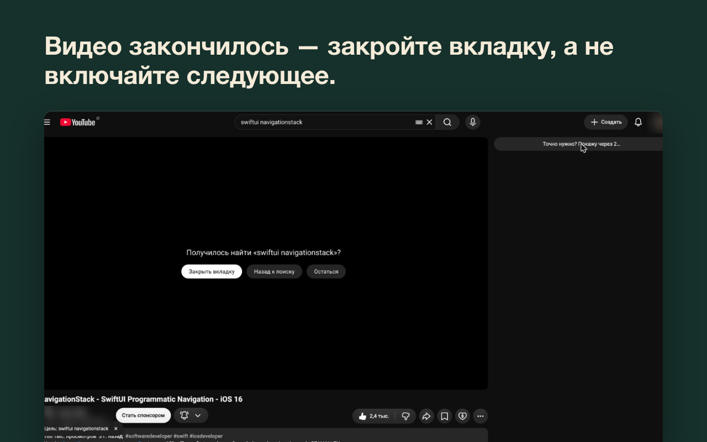

YouTube без Shorts, ленты и рекомендаций
YouTube всегда подсунет ещё одно видео. Errand прячет Shorts и ленту и в конце видео предлагает закрыть вкладку. Errand по-английски значит "сходить по делу": зашли за одним видео и ушли. Пригодится для учёбы, работы, срочной инструкции и одного видео перед сном.
Бесплатно, код открыт, аккаунт не нужен. Errand не делает запросов в сеть. Ставится и в Яндекс Браузер. Журнал поломок (англ.)
Что меняется на YouTube
- Главная
- Вместо ленты один вопрос: "Зачем вы здесь?" Пишете ответ и попадаете в поиск. Можно сделать так, чтобы главная сразу открывала "Смотреть позже", обычную ленту или подписки, причём без полки "Самые актуальные".
- Shorts
- Пропадают с главной, из поиска, подписок, страниц каналов и меню. Ссылки на шортсы открываются в обычном плеере или не открываются вовсе. Если нужно убрать только их, выберите на первом экране "Просто убрать Shorts": лента, рекомендации, комментарии, автовоспроизведение и конечная заставка останутся как были.
- Рекомендации
- Колонки рядом с видео нет. Кнопка "Показать рекомендации" открывает её через 10 секунд ожидания.
- Конец видео
- Следующее видео не включается, конечной заставки нет, и в полноэкранном режиме сетка с другими видео не появляется. Errand спрашивает, нашлось ли нужное, и предлагает закрыть вкладку. Плейлисты играют как обычно.
- Комментарии и миксы
- Комментарии по кнопке. С настройками по умолчанию скрыты и миксы, и подсказки под пустой строкой поиска. По желанию: чат трансляций, колокольчик, счётчики просмотров, лайков и подписчиков.
- Строгий режим
- Выбираете часы, например будни с 9 до 18. В это время пропадают и кнопки "показать".

Если YouTube что-то поменяет, вы узнаете
Такие расширения обычно ломаются одинаково. Когда YouTube меняет вёрстку, Shorts возвращаются и в отзывах появляется "после обновления не работает". На главной, в поиске и на страницах видео Errand проверяет, находит ли он то, что прячет, и не проскочили ли шортсы. Если что-то поменялось, на иконке появится "!", и в меню будет написано, что перестало работать. Каждая поломка попадает в открытый журнал с тремя датами: когда нашли, когда починили в коде и когда исправление вышло в Chrome Web Store.
Предупреждение про блокировщик рекламы обычно появляется, когда блокируются запросы или реклама. Errand ничего из этого не блокирует и загрузку видео не меняет.
Вопросы
Это бесплатно?
Да. Код открыт под лицензией GPL-3.0 на GitHub.
Можно убрать Shorts на компьютере без расширения?
Частично. У полки Shorts есть "Не интересует", но она возвращается. Errand убирает шортсы с главной, из поиска, подписок, страниц каналов и меню, а ссылки на них открывает в обычном плеере.
Как убрать рекомендации на YouTube?
Errand убирает колонку рекомендаций на странице видео и вместо ленты показывает вопрос "Зачем вы здесь?". Кнопка "Показать рекомендации" откроет их через 10 секунд. Строгий режим в выбранные часы убирает и её.
Там есть ИИ?
Нет. Errand прячет части страницы YouTube и добавляет пару кнопок. Нейросетей в нём нет, запросов в сеть он не делает.
Какие данные собирает?
Никаких. Настройки и счётчик дел за неделю хранятся в браузере, запросов в сеть расширение не делает.
YouTube покажет предупреждение про блокировщик рекламы?
Не должен. Обычно предупреждение появляется, когда блокируются запросы или реклама. Errand ничего из этого не блокирует и загрузку видео не меняет.
Блокирует рекламу?
Нет. Для этого есть uBlock Origin, они друг другу не мешают.
Яндекс Браузер, Brave, Vivaldi?
Ставится из Chrome Web Store.
На телефоне?
Пока нет.
Переходите с Unhook?
Почти у всех основных переключателей Unhook есть замена в Errand: лента на главной, рекомендации, Shorts, комментарии, конечная заставка, миксы, чат трансляций, колокольчик и автовоспроизведение. В Errand они собраны в три готовых набора, а отдельные части можно поменять потом в меню. В Unhook есть то, чего нет в Errand, например можно скрыть описание видео или верхнюю панель. Настройки из Unhook не переносятся. Пока пробуете Errand, выключите Unhook, чтобы было видно, кто что прячет.
Инструкции
Как убрать Shorts на YouTube YouTube без рекомендаций Как убрать конечную заставку YouTube Сравнение с Unhook и другими (англ.)
Обновлено в ноябре 2026